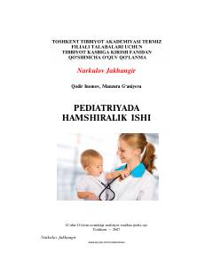

PHPediatriya sohasida hamshiralik ishi va bolalar parvarishi bo'yicha qo'llanma.
Ushbu kitob pediatriyada hamshiralik ishi, bolalarga tibbiy yordam ko'rsatish va parvarish qilish asoslariga bag'ishlangan. Unda bolalar kasalliklari, ularning oldini olish hamda hamshiralik parvarishi jarayonlari yoritilgan.